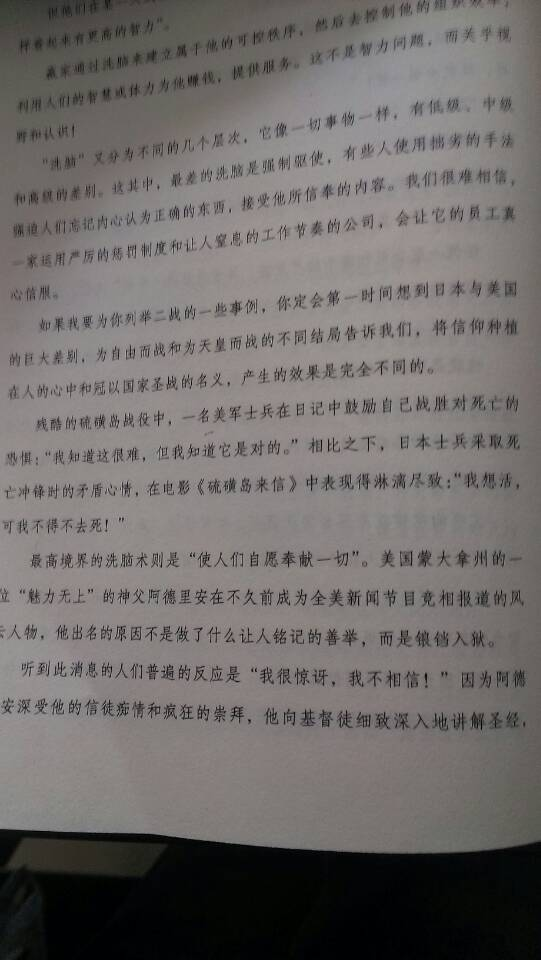
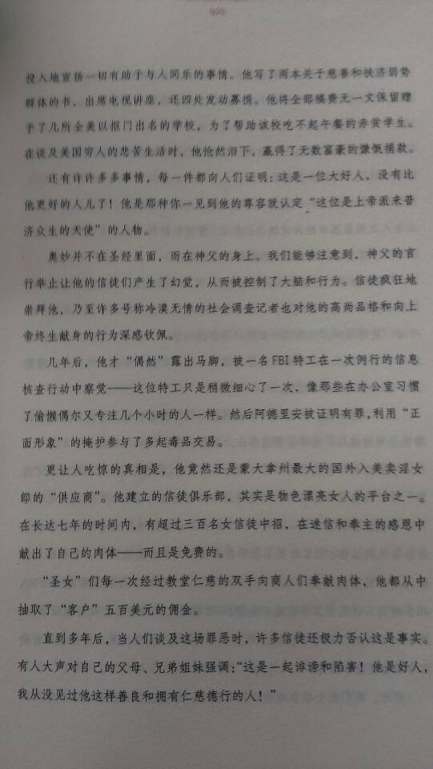

Conversation with 81184027 at Sat 10 May 2014 01:43:24 PM CST on 154115835 (webqq)
(01:43:01 PM) 福建-福州&水浒: 学生时期一到周末上午泡图书馆，看累了就跑网吧上网了:face13:
(01:43:01 PM) 福建-福州&水浒: 学生时期一到周末上午泡图书馆，看累了就跑网吧上网了:face13:
(01:43:33 PM) 光: 嗯
(01:43:01 PM) 福建-福州&水浒: 学生时期一到周末上午泡图书馆，看累了就跑网吧上网了:D
(01:44:00 PM) 光: 混书吧好
(01:44:11 PM) 光: 混网吧最后都打游戏了
(01:44:25 PM) 福建-福州&水浒: 学校图书馆都是政治产物，我是去市区的图书馆
(01:44:26 PM) 光: 嗯
(01:45:23 PM) 光: 年轻人自制能力差
(01:45:36 PM) 光: 混网吧没有最后不打游戏的，然后就是网瘾
(01:47:18 PM) 福建-福州&水浒: 斗地主，泡泡堂，传奇红警 等那时候好流行在2003年
(01:47:24 PM) 光: 嗯
(01:48:05 PM) 光: 然后游戏技能直线上升
(01:48:14 PM) 光: 其他就荒废了
(01:48:37 PM) 福建-福州&水浒: 呵呵，估计你以前也是有游戏网瘾
(01:48:36 PM) 光: 对
(01:48:51 PM) 光: 我游戏玩的还好呢
(01:49:18 PM) 福建-福州&水浒: :D
(01:49:19 PM) 光: :face14:
(01:50:07 PM) 光: 年轻总是容易手上一段弯路才慢慢醒悟
(01:50:12 PM) 光: 走
(01:50:20 PM) 福建-福州&水浒: 2001有个名词叫网吧半夜（通宵）
(01:50:20 PM) 光: 嗯
(01:50:28 PM) 福建-福州&水浒: 包夜
(01:50:28 PM) 光: 对啊
(01:51:10 PM) 福建-福州&水浒: 太伤身体了
(01:51:11 PM) 光: 嗯
(01:51:26 PM) 福建-福州&水浒: 空虚所致
(01:51:39 PM) 光: 可能是好奇心吧
(01:51:56 PM) 福建-福州&水浒: 对
(01:51:54 PM) 光: 毕竟当时来说网络还是新鲜事物
(01:52:25 PM) 福建-福州&水浒: 好奇，班里的同学课余每天讨论游戏难免不好奇
(01:52:23 PM) 光: 我大概是98年触网
(01:52:42 PM) 光: 97年
(01:52:47 PM) 光: 说错了
(01:53:33 PM) 福建-福州&水浒: 因此我那时候也跟上大众了，那个时候每天伙食是10元，上网的费用一小时2元
(01:53:34 PM) 光: 当时所有的兴趣都被这个吸引过去了
(01:53:45 PM) 光: 嗯
(01:53:59 PM) 福建-福州&水浒: 半天时间没了，不像现在学生宿舍有网络
(01:54:00 PM) 光: 我们那一群人都是这样的
(01:54:28 PM) 福建-福州&水浒: 花光了只能吃泡面度日了
(01:54:27 PM) 光: 是的
(01:54:42 PM) 光: 我们寝室自己有电脑的
(01:54:47 PM) 光: 不像别的寝室
(01:54:56 PM) 福建-福州&水浒: ～～～～
(01:54:54 PM) 光: 所以跷课率很高
(01:55:07 PM) 光: 各个都是电脑高手
(01:55:40 PM) 光: 老师讲课没有自己动手有意思
(01:55:58 PM) 福建-福州&水浒: 嘿嘿
(01:55:58 PM) 光: 我们当时都是自己找资料摸索的
(01:56:07 PM) 光: 嗯
(01:56:55 PM) 光: 电脑水平真是玩出来的
(01:57:41 PM) 福建-福州&水浒: 我读书的学校那时候还是全日制封闭的，吃喝拉撒都在学校，周末出外
(01:57:38 PM) 光: 嗯
(01:58:56 PM) 福建-福州&水浒: 一到周末就跟劳改犯刚放出来一样，周边网吧全部满员，还排队等候，
(01:59:30 PM) 福建-福州&水浒: 对网络的好奇比学习还积极
(01:59:33 PM) 福建-福州&水浒: :D:D:D:D
(02:00:32 PM) 永生之福: 《江西又发现恐龙新品种报道》
http://view.inews.qq.com/q/WXN20140510006280011?refer=mobileqq
全世界到处都有几千万年前恐龙等动物化石！
但是全世界却怎么总是发现不了七千，八千年前的人类化石呢？？更不说一万，五万，五十万年前人类化石！！
这说明什么啊？？
难道人类真的如神在圣经上说的，根本就是六千年前神造的而己！？？！
(02:01:07 PM) 光: http://dl.dbank.com/c0cpqac9po
(02:01:11 PM) 光: 那本书你不用买了
(02:01:15 PM) 光: 我找到电子版了
(02:01:31 PM) 光: 对兴趣是最好的老师
(02:04:32 PM) 福建-福州&水浒: :share:
(02:04:32 PM) 光: :face14:
(02:04:47 PM) 福建-福州&水浒: 省了38块了
(02:05:03 PM) 福建-福州&水浒: 发我邮箱吧
(02:05:15 PM) 福建-福州&水浒: 下班电脑看
(02:05:22 PM) 光: 好
(02:05:37 PM) 光: 邮箱再给一下
(02:06:23 PM) 福建-福州&水浒: lwg2005.com@126.com
(02:06:31 PM) 福建-福州&水浒: 谢谢
(02:06:30 PM) 光: 嗯
(02:06:49 PM) 光: 15M附件没问题哦
(02:07:26 PM) 福建-福州&水浒: 没问题
(02:07:49 PM) 福建-福州&水浒: 2g的网盘
(02:08:10 PM) 光: 嗯
(02:08:39 PM) 光: 已发
(02:09:15 PM) 福建-福州&水浒: :share:
(02:09:12 PM) 光: 上海就这点好
(02:09:17 PM) 光: 图书馆藏书丰富
(02:09:57 PM) 光: 上图基本上叫的出名字的书都有
(02:10:02 PM) 福建-福州&水浒: 上海还有外国传教士建立的教会么？
(02:10:05 PM) 光: 有特批的
(02:10:11 PM) 光: 两个还是三个
(02:10:17 PM) 福建-福州&水浒: 噢
(02:10:13 PM) 光: 嗯
(02:10:34 PM) 福建-福州&水浒: 也就是备案在内的喽
(02:10:51 PM) 光: 嗯
(02:10:59 PM) 光: 不过都是外国人自己管理
(02:11:00 PM) 光: 挺好的
(02:11:11 PM) 福建-福州&水浒: 挺想去上海的，有同学在那
(02:11:09 PM) 光: 嗯
(02:11:38 PM) 光: 外国人想来中国也不容易的
(02:12:09 PM) 福建-福州&水浒: 有空去我同学酒店吃饭啊，榕港大酒店，给你打折:D
(02:12:10 PM) 光: ：）
(02:13:23 PM) 光: 之前那个外国朋友说本来是申请去北京，好像因为什么原因没有被同意，后来才到了上海
(02:13:50 PM) 光: 可能中国对老外入境也做限制的吧
(02:14:44 PM) 福建-福州&水浒: 本来就是因为担心中国教会被外国人控制，才成立三自爱的呀
(02:14:40 PM) 光: 这个层面的问题不太理解
(02:14:45 PM) 光: 嗯
(02:15:22 PM) 福建-福州&水浒: 不过三自爱也基本是行政管理部门了
(02:15:22 PM) 光: 嗯
(02:15:33 PM) 光: 最早我去的是基督教青年会
(02:15:48 PM) 光: 但是去了之后感觉怪怪的
(02:15:55 PM) 福建-福州&水浒: 新教？
(02:15:54 PM) 光: 新教
(02:16:03 PM) 福建-福州&水浒: 怎么说呢
(02:16:07 PM) 福建-福州&水浒: 哪里怪
(02:16:08 PM) 光: 党领导呗
(02:17:23 PM) 福建-福州&水浒: 呵呵
(02:17:26 PM) 光: 嗯
(02:17:37 PM) 光: 有一个一起去的女孩子
(02:17:43 PM) 光: 直接就提出疑问了
(02:17:51 PM) 光: 后来去了一次之后就没去了
(02:17:57 PM) 福建-福州&水浒: 行政宗教一点不为过
(02:17:57 PM) 光: 嗯
(02:18:11 PM) 光: 其实我读书的时候
(02:18:16 PM) 光: 就接触过新教
(02:18:43 PM) 福建-福州&水浒: 或许没上心
(02:18:39 PM) 光: 圣诞节我们跑到当地的小教会去过的
(02:18:53 PM) 光: 当时是好奇的
(02:19:13 PM) 福建-福州&水浒: 鞥嗯
(02:19:17 PM) 光: 朋友的主要目地是调戏修女
(02:19:27 PM) 光: 我就是跟风
(02:19:38 PM) 福建-福州&水浒: --b
(02:19:34 PM) 光: 不过过程很严肃的
(02:19:58 PM) 光: 大家都宗教都没概念
(02:20:01 PM) 光: 只是玩
(02:20:03 PM) 光: 对
(02:20:23 PM) 光: 对了
(02:20:29 PM) 光: 基督教的女牧师叫什么的
(02:20:49 PM) 福建-福州&水浒: 不太了解
(02:20:48 PM) 光: 嗯
(02:20:54 PM) 光: 当时是一个女的
(02:21:08 PM) 光: 挺好的一人，见我们去了很欢迎的
(02:22:06 PM) 福建-福州&水浒: 嗯
(02:22:06 PM) 光: 嗯
(02:22:18 PM) 福建-福州&水浒: 都差不多吧
(02:23:15 PM) 福建-福州&水浒: 我去年去天主教教堂拿圣经，那个修女又让我喝水又留我吃饭的
(02:23:35 PM) 光: 嗯
(02:23:39 PM) 光: 平民教育家晏阳初曾是全国协会智育部的干事。青年毛泽东还曾作为义务教员参与过晏阳初在长沙的平民教育运动。
(02:23:54 PM) 福建-福州&水浒: 我都没好意思，不过最后我与他们提了全能神邪教，让他们教会防备着点
(02:23:51 PM) 光: 毛泽东也参加过基督教青年会的活动
(02:23:59 PM) 蔚蓝的天空: 修女也是人
(02:24:05 PM) 蔚蓝的天空: 也有七情六欲
(02:24:09 PM) 光: 不一样的
(02:24:19 PM) 光: 心态和普通人已经不一样了
(02:24:33 PM) 福建-福州&水浒: 对
(02:24:44 PM) 蔚蓝的天空: 毛泽东不是参加是调查
(02:24:49 PM) 蔚蓝的天空: 是了解
(02:24:47 PM) 光: 嗯
(02:24:56 PM) 福建-福州&水浒: 我问她你从小就励志当修女么
(02:24:53 PM) 光: 可以这么说吧
(02:25:10 PM) 蔚蓝的天空: 要不然他就没有发言权
(02:25:15 PM) 福建-福州&水浒: 她说对，修女不允许结婚，
(02:25:11 PM) 光: 嗯
(02:25:30 PM) 福建-福州&水浒: 都是自愿滴
(02:25:36 PM) 光: 年轻时候的毛泽东思想很先进的
(02:26:37 PM) 蔚蓝的天空: 他就是个超爱读书的人
(02:26:55 PM) 光: 嗯
(02:27:23 PM) 蔚蓝的天空: 有的一本书要读几十遍
(02:27:37 PM) 福建-福州&水浒: 可惜的是决策失误，只允许让少数人读书了，
(02:28:11 PM) 福建-福州&水浒: 或许他知道造反者都是知识分子占主导
(02:28:16 PM) 蔚蓝的天空: 什么决策失误
(02:28:48 PM) 蔚蓝的天空: 读书越多 思想越反动 这是他说的
(02:29:10 PM) 福建-福州&水浒: 嗯嗯
(02:29:50 PM) 蔚蓝的天空: 光的 思想也很反动
(02:29:51 PM) 光: 嗯
(02:29:54 PM) 光: 右派
(02:30:01 PM) 光: 文革一定是右派
(02:30:38 PM) 山东-青岛&昆吾: 不只是右派吧……
(02:30:44 PM) 光: 。。。
(02:30:52 PM) 福建-福州&水浒: 文革前让知识份子进言，没人敢进言，他老人家等50知识份子说了真话后就觉得这些知识份子反动了
(02:30:55 PM) 蔚蓝的天空: 不要再说伟人的决策失误
(02:31:01 PM) 福建-福州&水浒: 那谁还敢说真话呢
(02:31:13 PM) 山东-青岛&昆吾: 怕是要……
(02:31:25 PM) 福建-福州&水浒: 结果就是打倒一片人
(02:31:33 PM) 蔚蓝的天空: 如果当时谁有能力 他也可以决策
(02:32:11 PM) 蔚蓝的天空: 文革是很有必要性的一场政治运动
(02:32:08 PM) 光: 其实我最早看得书毛左的很多
(02:32:13 PM) 福建-福州&水浒: 他老人家喜欢听好话，
(02:32:16 PM) 光: 但是越看越糊涂
(02:32:23 PM) lost message from #95106 to #95106
(02:32:28 PM) 蔚蓝的天空: 谁都喜欢听好话
(02:32:29 PM) 光: 直到看了胡适的书，脑子才清醒起来
(02:33:50 PM) 醒悟: 前段日子网上看到天主教牧师强奸信徒
(02:33:59 PM) 福建-福州&水浒: 奴性性格，谁不敢说真话，
(02:34:04 PM) 福建-福州&水浒: 牧师是基督教的
(02:34:08 PM) 福建-福州&水浒: ;@
(02:34:15 PM) 福建-福州&水浒: 天主教是神父
(02:34:23 PM) 福建-福州&水浒: :O;@
(02:34:49 PM) 福建-福州&水浒: 亏你家还信基督教的，这都能搞错！
(02:34:57 PM) 蔚蓝的天空: 你看过毛泽东的什么书
(02:35:02 PM) 醒悟: 神父说错了!外国的
(02:35:21 PM) 福建-福州&水浒: 不稀奇啊
(02:35:50 PM) 醒悟: 发生好多次了这种新闻
(02:36:44 PM) 福建-福州&水浒: 
(02:36:46 PM) 醒悟: 信神的也难脱俗
(02:36:54 PM) 福建-福州&水浒: 
(02:37:03 PM) 福建-福州&水浒: 这两页你可以看看
(02:40:55 PM) 光: http://book.douban.com/subject/1848519/
(02:41:01 PM) 福建-福州&水浒: 当人们把个人崇拜到一个极点时难免会被此人的表面给迷惑了，
(02:40:58 PM) 光: 找到了
(02:40:59 PM) 光: 这本
(02:41:23 PM) 光: 这是我小时候看的书
(02:41:35 PM) 光: 真是越看越糊涂
(02:42:03 PM) 山东-青岛&昆吾: 我去……
(02:42:21 PM) 光: 。。。
(02:42:41 PM) 山东-青岛&昆吾: 300乘500美刀……
(02:43:00 PM) 光: 。。。
(02:44:22 PM) 福建-福州&水浒: 人民把崇拜者抬高到一个境界，难免把的旁人的意见，视作为偏见
(02:45:51 PM) 光: 人民喜欢造神
(02:47:05 PM) 福建-福州&水浒: 我迫切看刘彭的 当代美国宗教 就是想了解为何全能神被美国媒体定为邪教之首，又为何这邪教美国人利用中国人毒害中国
(02:47:09 PM) 光: 被神化的人列表
维基百科，自由的百科全书
这是本页的一个历史版本，由哲里（讨论 | 贡献）在2013年11月21日 (四) 01:45编辑。这可能和当前版本存在着巨大的差异。
(差异) ←上一修订 | 查看当前版本 (差异) | 下一修订→ (差异)
被神化的人列表，列出了一些被自己或其他人神化的名人，並且区分了是在生前已被神化或是死後才被崇拜。
目录
1 相關差別
2 君主崇拜
3 死后被神格化
4 非自願被神化的人
5 自称为神的人
6 参看
7 参考资料
8 参考文献
9 外部链接
相關差別
神化是指把一個人高舉至神的地位。
君主崇拜是指把君主神化。
英雄崇拜是指把某歷史人物神化。
個人崇拜是現代專政統治者的君主崇拜。
喇嘛和天皇就因為宗教的原因而被神化。
歐伊邁羅斯認為所有神原本是人類，把有神論說成是祖先崇拜。
君主崇拜
人物 圖片 時期 介紹
法老 Tutmask.jpg 3050 - 30 BC 在古埃及法老是皇帝並被奉為神明。他們的權利與鷹神荷魯斯、禿鷹女神奈荷貝特、眼鏡蛇女神瓦吉特同等。古埃及人相信法老王死後會在來生繼續領導他們，所以法老王的葬禮十分隆重和制作木乃伊令他的屍體不會腐朽。見埃及法老列表。
納拉姆辛 Stele Naram Sim Louvre Sb4.jpg 2255-2119 BC 第一個自稱是神的美索不達米亞皇帝。
中國君主 QinshihuangBW.jpg ？ BC - AD 1912 周朝君主稱為天子，秦始皇亦定義皇帝為天子。
羅馬皇帝 0092 - Wien - Kunsthistorisches Museum - Gaius Julius Caesar.jpg 42 BC - AD 363 自從尤利烏斯凱撒在前42年被尊為「神聖的尤利烏斯」(Divus Iulius)(死后)和屋大維自稱為神子(divi filius)，大部份從1世紀到4世紀的羅馬皇帝都被稱為神，包括提庇留、卡利古拉、克勞狄一世、哈德良、康茂德、君士坦丁一世和叛教者尤利安。
日本天皇 Imperial Seal of Japan.svg ? - 1946 歷史中被指為天照大神的後裔。昭和天皇於1946年發表人間宣言否定天皇作為「現代人世間的神」的地位，宣告天皇也是僅具有人性的普通人。
納齊茲族首領 Cherokeenationalflag.png 700 納齊茲人是(印地安人一支)被神權政體所管理，首領的名稱是The Great Sun。一些首領會被視為神。
夏連特拉國王 Borobudur Northwest View.jpg 700 爪哇島的夏連特拉王國是大乘佛教的主要推動者，修建眾多佛教建築，包括著名的婆羅浮屠。
達賴喇嘛 1st Dalai Lama.jpg 1391- 在藏傳佛教中被視爲觀世音菩薩重新成肉。班禪額爾德尼是阿彌陀佛成肉。
印加皇帝 Ataw Wallpa portrait.jpg 1438 印加皇帝自稱自己為太陽之子，而且地位與埃及法老十分相似。
伊斯瑪儀一世 Сефи 1-й 1629-42.jpg 1502–1524 伊朗薩非王朝的創立者，自稱為神的化身。
尼泊爾的國王 Flag of Nepal (19th century-1962).svg 1768-2008 雖然尼泊爾是釋迦牟尼的出生地，但沙阿王朝的國王就被認為是毗濕奴的化身。他是一切种姓的主人。他有權升降任何人的種姓。
死后被神格化
人物 圖片 時期 介紹
印何阗 Imhotep-Louvre.JPG 公元前2600年 古埃及建筑师和医生在死亡2000年后被尊为神，主管医学和治愈。
狄多女王 Guérin Énée racontant à Didon les malheurs de la ville de Troie Louvre 5184.jpg 公元前814年 迦太基的創立者和女王。死後被人民尊為Tanit并與女神阿斯塔蒂同化。[1]她的信徒在滅國後仍然生存，後來由出生在北非的羅馬皇帝塞普蒂米烏斯·塞維魯介紹給羅馬人。之後在信奉基督教的狄奧多西一世鎮壓下消失。
荷马（英雄崇拜） Homer British Museum.jpg 公元前8世纪 在亚历山大城被托勒密四世神格化。
罗穆卢斯和瑞摩斯（英雄崇拜） She-wolf suckles Romulus and Remus.jpg 公元前771-717年 罗马的建立者，玛尔斯的兒子，羅穆盧斯是羅馬王政時代的首位國王。死後被稱為神。
赫费斯提翁 Hephaistion portrait Prado bronze sketch.jpeg 356-324 BC 被亚历山大大帝尊为神
亚历山大大帝（英雄崇拜） AlexanderCameo.JPG 前356-323年 有些人認為他用頭銜「阿蒙的兒子宙斯」去暗示自己是半人半神。這被埃及祭師在利比亚沙漠的綠洲Siwah認為是阿蒙的聖諭。
圣母玛利亚 The Madonna in Sorrow.jpg ~20/17 BC- 在一些基督教派, 尤其是天主教或 东正教, 东方正统教会和 東儀天主教會里, 耶稣的母亲被视为“圣母”（英语：Theotokos）。
拿撤勒的耶穌 Grunewald - christ.jpg ~4 BC - ~33 AD 支持三位一體的基督教派认为基督就是神。基督教新約聖經记载，耶稣在被杀后第三天复活，后来返回天上。見聖子、耶穌復活。在伊斯蘭教的《古兰经》中耶稣是一个先知、猶太教中是一個拉比。
西門·馬吉斯 Death of simon magus.jpg 1世纪 在西門主義中被認為是神。
安提诺乌斯 Antinous Ecouen Louvre Ma1082 n3.jpg 111-130年 被哈德良尊为神。他是最後一個在西方文明中被神化的非皇室人物。
關羽 Guanyu-1.jpg ？－220年 關羽在隋朝時已被神格化，直到現在亦被多數民間信仰中被敬拜。在道教、儒教、佛教也有超然地位。香港的三合會和警察也尊敬關羽。某些道教和中国佛教派別視之為半人半神。
阿里·本·阿比·塔利卜 Alī.png 599-661 根據阿拉維派的思想，阿里大概與基督教三位一體其中一員的身份一樣。[2]
菅原道真 Hyakuninisshu 024.jpg 845-903年 日本平安時代的官員。死後因為被認為是他的怨靈在作祟而被神化。雷神與學問之神。天神信仰
林默 Kinmen Matsu Park.JPG 960-987年 北宋初年福建路泉州（後改隸興化軍）莆田縣湄洲島巫女，後有航海者遇風浪，船員指稱因她而獲得脫險[3]，其後累傳靈驗，因而逐漸被奉為神祇，号为妈祖。
哈基姆 AHMosque.jpg 985年 第六任埃及法蒂瑪王朝的哈里發。Druze派穆斯林認為他是安拉的化身並身為馬赫迪回來。
滿者伯夷國王
Wringin Lawang, Trowulan.jpg
1293-1597 位於印尼的東南亞歷史上最大王國之爪哇族統治者，死後均被視為印度教神祇（例如羅登·韋查耶）。
德川家康 Tokugawa Ieyasu2.JPG 1543 - 1616年 德川家康被认为是藥師如來化身，死後成為日本佛教的東照大權現。
拉扎鲁·路德维克·柴门霍夫 1908-kl-t-zamenhof.jpg 1859 - 1917年 大本教信徒視之為神。
黎剎 Jose rizal 01.jpg 1861–1896 因領導菲律賓革命而被某些菲律賓人神格化[4][5]。
華萊士·法德·慕罕默德 Noi flag 2.svg 约1877 - 约1934年 美國宗教團體「伊斯蘭民族」領導者，由以利亞·穆罕默德追封為神，也曾被該團體授予多項頭銜
大塚寬一 1891年 神灵教聲稱創辦者"神道成肉身，出現在人類之間並創立神灵教。
喬治·華盛頓 Gilbert Stuart Williamstown Portrait of George Washington.jpg 1732–1799 在夏威夷的神道教神社裡被供奉為神[6]。在美國國會大厦的圓形屋頂內部，他被繪成升天成神，而該畫作也被稱《華盛頓神話》。
吳鳳 1699 - 1769 台灣清治時期的通事吳鳳，被認為是「捨身取義」的犧牲自己來「教化」鄒族原住民，使他們不再出草，後人乃於台灣嘉義縣中埔鄉建廟祭祀以茲紀念。此事跡從日治時期起還曾經納入台灣國小教科書中、並將阿里山區一帶命名為「吳鳳鄉」，直到1989年因原住民意識的興起、強烈抗議才將相關課文內容刪除，並把鄉名改為阿里山鄉。但吳鳳廟仍然存續至今。
非自願被神化的人
人物 圖片 時期 介紹
以斯拉
Esdras-Ezra.jpg
458 BC 第二聖殿猶太教創建者[7]，為猶太教歷史上的重要人物[8]。《古蘭經》上記載葉門猶太人相信烏茲耶爾（一般認為即以斯是神的兒子[9]。很多猶太人認為他從未死亡。
安條克二世 AntiochusIIMET.jpg 公元前286-246年 塞琉古帝國統治者。安条克一世之子。解放了多個被埃及控制的地區，回到小亞細亞的自治城市後獲得神的稱號。[10]
鄭和 Zhen he.jpg 1371年－1433年 東南亞一帶的華人相信，鄭和將軍是所有華人的驕傲，也有人把他當成神來膜拜。他們認為鄭和很了不起，而且擁有超自然的神力，如同神祇一般。更有人當鄭和是「財神爺」，有些旅行團的導遊特地安排旅客們去親手摸摸他的雕像，以招來財運[11]。
埃尔南·科爾特斯 Cortes.jpg 1471 - 1541年 被蒙特祖馬二世認為是羽蛇神。
約翰·尼可森將軍
Brigadier-General John Nicholson
1822–1857 尼卡爾教派的啟發者。
克里希那穆提 Jiddu Krishnamurti 01.jpg 1895-1986年 拒絕神智學協會所封的彌勒化身和彌賽亞稱號。
海爾·塞拉西一世 Selassie restored.jpg 1892-1975年 衣索比亞君主，而拉斯塔法里教派則將他尊為神。
菲利普亲王 (爱丁堡公爵) Prince Phillip at NASA 2007.jpg 1921年- 在瓦努阿圖塔納島村落堯南恩的船貨崇拜團體中被認為是神。[12]
庫瑪麗 Bhaktapur Kumari.jpg -? 這些小女孩都被印度教徒和佛教徒視為印度教女神杜爾加的化身而被崇拜（在尼泊爾， Taleju ）。他們在青春期前直到他們達到青春期直到被崇拜。 他們的教派組織織都在南亞國家，如尼泊爾。
蔣中正 Chiang Kai-shek Colour.jpg 1887-1975 中華民國從大陳島撤退後，隨之撤離的居民在當時多被稱為「大陳義胞」。由於他們的命運曾與民國政府緊緊結合，來台後的大陳居民大多對當時執政的中國國民黨及蔣家有著很強烈的情感認同，日後投效軍旅、公務者不在少數。而在大陳居民的居住區更是有人修建「蔣公廟」，廟內祭拜蔣中正，以表達對蔣家的感恩，其中以高雄市旗津區大陳新村的「蔣公感恩堂」最為人所知。[13]在日本有一座中正神社。
自称为神的人
人物 圖片 時期 介紹
安條克四世
Antiokhos IV.jpg
前215–164年 塞琉古帝國國王（在位期間：前175-164年)，是首任在錢幣上使用神性稱號的塞琉古國王。
西門·馬吉斯
Death of simon magus.jpg
1st century 持諾斯底主義的撒馬利亞人，同時也是西門主義的創始人。
薇樂達Veleda
Velleda.jpg
1世紀 日耳曼女先知，自認一生中神與她同在。
克利斯次
Ecstatic ritual of Khlysts (radeniye).jpg
1700 原為俄羅斯東正教教徒，自認為神而創立克利斯次教派。
洪秀全 Hong Xiuquan.jpg 1814 – 1864年 洪秀全自称是耶稣的弟弟，耶和華的儿子。领导太平天国运动, 曾控制了中国大片地方后来被打败並死亡。
戴維恩神父 ~1880-1965 他的信徒称之为"成了肉身的上帝"[14]
弗朗西斯科·馬夏斯·恩圭馬 1924-1979 1978年，他變更赤道幾內亞的國家格言為：「除了馬夏斯·恩圭馬，沒有其他的神。」[15]
約尼塔·裴拉查（米塔） Juanita Garcia Peraza.JPG 1897 在米塔信仰裡，米塔（裴拉查）是聖靈的化身。[16]
洛·迪帕林波爾 1898-1968 原名為勞倫斯·符斯威茲森的一位離婚荷蘭人，在歐洲販賣鰻魚，同時推廣他的新興宗教。他的追隨者認為他是一位對抗惡魔的活神仙。[17]
耶和華·汪雍儀 1924年- 他声称“我就是创造亚当和夏娃的人。我造了他们的身体和他们的血”， 有大约120至1000个追随者认为他就是上帝。[18][19]
吉姆·瓊斯 02-jones-jim ji.jpg 1931-1978 人民聖殿教的創辦者。
雅威·本·雅威 1935-2007 美國新興宗教團體「雅威國度」的領導者，原名小胡隆·米契爾，自封號意義為「神，神之子」。他僅自稱為神之子，而非神，但許多追隨者仍將他視為神的體現。[20][21]
又吉光雄
Mitsuo Matayoshi.jpg
1944- 在1997年成立世界經濟共同体党，基於他認為自己是上帝和耶穌。[22]
克勞德·沃里隆（雷爾）
克勞德·沃里隆（雷爾）.jpg
1946- 自稱是彌勒菩薩，"Elohim"(古代太空人)的使者。
維薩里翁 1961- 自稱是耶穌，稱自己不是神但就是神的代言人。
尼瑪拉.史瓦茲塔瓦 1923- 新興宗教團體霎哈嘉瑜伽的創立者，宣稱自己為聖靈鑠乞底的化身，而其他的化身（例如奎師那、基督等）是她的不同形貌。[23][24]
實諦·賽·巴巴
Sathyasaibabafloat1946.jpg
1926–2011 印度教大師，追隨者相信他是由印度教神祇達塔特瑞亞化身所轉世。他宣稱擁有變化物質的法力，例如可變出珠寶等。
参看
神
君主崇拜
自称为耶稣的人物列表
马赫迪 (消歧义)
弥勒菩萨
神化
参考资料
Virgil, Aeneid 1.446f, Silius Italicus, Punica 1.81f
Encyclopedia Britannica, online edition
《历代神仙通鉴》
http://www.filipinowriter.com/kultong-rizalismo-sanaysay-ni-jon-e-royeca
http://www.britannica.com/EBchecked/topic/505020/Rizalist-cult
http://eos.kokugakuin.ac.jp/modules/xwords/entry.php?entryID=342
Brueggemann 2002, pp. 75, 144.
The New Encyclopedia of Judaism, Ezra
Encyclopaedia Judaica, Volume 6, Encyclopedia Judaica Jerusalem, p. 1108
Harper’s Bible Dictionary, San Francisco: Harper and Row, 1985
「郑和伞」撑起和平 郑和之旅厚往薄来的四段轶闻
BBC NEWS | Programmes | From Our Own Correspondent | Is Prince Philip an island god?
林聰勝、李菁豪，《旗津蔣公廟 陸客來朝聖》，蘋果日報，2011年07月10日
http://www.cesnur.org/testi/bryn/br_miller.htm "Father Divine: A General Overview", Timothy Miller, 1999, Retrieved 6月6日, 2007年, "Followers of Father Divine proclaimed him God in the flesh, and for most Americans nothing could have been more ridiculous than a small African-American deity."
[1]
Essay in Latin American Issues Volume 13 states she taught that, "when a shooting star moving in the distance suddenly approached her and landed on her forehead, filling the room with light (Cruz). She had become the living incarnation of the Holy Spirit, who at that moment revealed to her the name of God in this new era: 'MITA'" or "Spirit of Life."
De God die Lou heette (Dutch language) "The God that was called Lou" VPRO TV programme.
International Cultic Studies Association. INTERNATIONAL: Kenya-"God" and 400 Followers Living in Kenya. Cultic Studies Journal. 2001,. 18, No. 4.
BBC News (November 12, 2001). "Kenyan 'God' sent Aids as 'punishment'". Retrieved December 29, 2004.
"He identified himself as the 'grand master of the celestial lodge, the architect of the universe'."Crimelibrary
Miami Herald(October 15, 2001). "The old message of self-esteem has been crowded out by one that elevates their leader to Grand Master of All, the God of the Universe, the Grand Potentate, the Everlasting Father and the persecuted Messiah."
"After the Upper House Election, Prime Minister Junichiro Koizumi should hand the seat of the Prime Minister to Jesus Matayoshi, the one true God."[2]
Judith Coney, Sahaja Yoga: Socializing Processes in a South Asian New Religious Movement (1999) p27 "She began her mission of salvation in earnest, establishing a reputation as a faith healer ... Then, on December 2nd 1979, in London, she unequivocally declared her divinity to her followers: '[Today] is the day I declare that I am the One who has to save the humanity. I declare, I am the one who is Adi Shakti, who is the Mother of all the mothers, who is the Primordial Mother, the Shakti, the purest desire of God, who has incarnated on this Earth to give meaning to itself...' Since then, she is most often understood by her followers to be the Devi, the Goddess of Indian mythology, returned to save the world."
::Sahaja Yoga-Tamil:: Adi Sakthi By Thirumoolar
参考文献
Hogue, John Messiahs: The Visions and Prophecies for the Second Coming (1999) Elements Books ISBN 1-86204-549-6
外部链接
Unknown (January 24, 2006) Heritage: Living gods face purge The Asian News
取自“http://zh.wikipedia.org/w/index.php?title=被神化的人列表&oldid=29276347”
(02:47:28 PM) 福建-福州&水浒: 我想到书中找找答案
(02:47:42 PM) 醒悟: 所以信仰信的好了人品好!信坏了神经病
(02:48:04 PM) 光: 洪秀全 Hong Xiuquan.jpg 1814 – 1864年 洪秀全自称是耶稣的弟弟，耶和華的儿子。领导太平天国运动, 曾控制了中国大片地方后来被打败並死亡。
(02:48:34 PM) 醒悟: 美国真的说全能是第一邪教?
(02:48:40 PM) 光: 蔣中正 Chiang Kai-shek Colour.jpg 1887-1975 中華民國從大陳島撤退後，隨之撤離的居民在當時多被稱為「大陳義胞」。由於他們的命運曾與民國政府緊緊結合，來台後的大陳居民大多對當時執政的中國國民黨及蔣家有著很強烈的情感認同，日後投效軍旅、公務者不在少數。而在大陳居民的居住區更是有人修建「蔣公廟」，廟內祭拜蔣中正，以表達對蔣家的感恩，其中以高雄市旗津區大陳新村的「蔣公感恩堂」最為人所知。[13]在日本有一座中正神社。
(02:48:54 PM) 福建-福州&水浒: @醒悟 是的
(02:49:09 PM) 光: 鄭和 Zhen he.jpg 1371年－1433年 東南亞一帶的華人相信，鄭和將軍是所有華人的驕傲，也有人把他當成神來膜拜。他們認為鄭和很了不起，而且擁有超自然的神力，如同神祇一般。更有人當鄭和是「財神爺」，有些旅行團的導遊特地安排旅客們去親手摸摸他的雕像，以招來財運[11]。
(02:49:20 PM) 福建-福州&水浒: 全能神邪教被美国媒体定为世界邪教之首
(02:49:48 PM) 光: 中國君主 QinshihuangBW.jpg ？ BC - AD 1912 周朝君主稱為天子，秦始皇亦定義皇帝為天子。
(02:50:05 PM) 光: 德川家康 Tokugawa Ieyasu2.JPG 1543 - 1616年 德川家康被认为是藥師如來化身，死後成為日本佛教的東照大權現。
(02:50:25 PM) 光: 關羽 Guanyu-1.jpg ？－220年 關羽在隋朝時已被神格化，直到現在亦被多數民間信仰中被敬拜。在道教、儒教、佛教也有超然地位。香港的三合會和警察也尊敬關羽。某些道教和中国佛教派別視之為半人半神。
(02:50:31 PM) 福建-福州&水浒: 凯风网发表的文章还算是比较靠谱的
(02:50:31 PM) 光: 拿撤勒的耶穌 Grunewald - christ.jpg ~4 BC - ~33 AD 支持三位一體的基督教派认为基督就是神。基督教新約聖經记载，耶稣在被杀后第三天复活，后来返回天上。見聖子、耶穌復活。在伊斯蘭教的《古兰经》中耶稣是一个先知、猶太教中是一個拉比。
(02:50:43 PM) 光: 羅馬皇帝 0092 - Wien - Kunsthistorisches Museum - Gaius Julius Caesar.jpg 42 BC - AD 363 自從尤利烏斯凱撒在前42年被尊為「神聖的尤利烏斯」(Divus Iulius)(死后)和屋大維自稱為神子(divi filius)，大部份從1世紀到4世紀的羅馬皇帝都被稱為神，包括提庇留、卡利古拉、克勞狄一世、哈德良、康茂德、君士坦丁一世和叛教者尤利安。
日本天皇 Imperial Seal of Japan.svg ? - 1946 歷史中被指為天照大神的後裔。昭和天皇於1946年發表人間宣言否定天皇作為「現代人世間的神」的地位，宣告天皇也是僅具有人性的普通人。
(02:55:13 PM) 光: 詞意
儘管對這兩詞的使用相當普遍，然而這兩詞一般並沒有準確的定義。也因此對這兩詞的使用往往是根基於輿論上。對於這兩詞的區分也有許多不同的看法：
公平的結果是左；公平的程序是右：古典自由主義強調程序的公平，自由市場便是例子之一。自由意志主義學者羅伯特·諾齊克便是強調區分「歷史過程」和「最後結果」兩者的20世紀知名理論家之一[1]。但另一方面，現代自由主義的支持者如约翰·罗尔斯則主張左派的政策也是使用以過程為根基的推論[2]，而一些新保守主義者傾向使用軍事手段建立民主才是屬於最後結果。
反對自由市場造成的不均等為左；而接受之則為右：通常，政治上的爭論都是聚焦於政府究竟應該（干涉主義）或不應該（自由放任）介入經濟以救濟貧窮的問題上。諾蘭曲線將這個差異作為左派和右派兩大差異的軸線之一。不過，政府的干涉並不一定就代表重新分配財富或平等主義的政策：一些形式的干涉是為了滿足某些財團公司的利益，例如社團主義的政策。所以左派往往支持对于少数民族、中下层民众等弱势群体进行援助、保护，而右派偏好顺其自然、自由竞争，即使其结果是造成主导种族、阶层对政治和经济的掌控。
偏好一個「更大的」政府為左；偏好一個「更小的」政府為右：政府的大小在這裡可以視為是政策和立場的差異，雖然政府雇員的數量通常被用以作為主要指標。不過，一些人也注意到某些政治流派如無政府共產主義、自由社會主義的存在與這種政治光譜不相合，反而如同諾蘭曲線一般垂直於左右派之外。
平等為左；自由為右：提出這種區隔的是哲學家諾貝托·波比歐（Norberto Bobbio）和Danielle Allen。波比歐主張唯一準確的左右派差異是有關人們對平等理念的態度，因為只有左派會想要保護或促進平等，而右派則會想要維持或增加不平等。左派和右派也同樣都宣稱同時追求平等和自由兩者，然而他們對這兩詞卻又有不同的解釋方式。
一個現世政府為左；一個宗教政府為右：這種差異在美國、印度和歐洲的天主教國家特別明顯（這些地方也是反教權主義代表左派的區域），有時候也包含中東。
集體主義為左；個人主義為右：不過，1960年代的反文化浪潮便是以強調個人自由為特色，而這波浪潮主要則被歸類為左派，而在宗教/現世的衝突上，現世主義者往往更傾向於強調個人的自由和宗教自由超越集體的信仰價值。不過，被許多人視為右派的法西斯主義也強調「國家的組織概念」，抱持著集體主義的概念，將國家看作是一個集體的實體。
革新為左；保守為右：雖然在一些國家裡「右派」和「保守派」往往被視為同義詞，但這一區分在討論左派右派的光譜時很少獲得重視。
法律支配文化為左；文化支配法律為右：這個公式是由美國的參議員丹尼尔·帕特里克·莫伊尼汉（Daniel Patrick Moynihan）提出才為人所知的，但最早則是由埃德蒙·伯克所構想的。
支持跨國家團體為左；僅支持獨立國家和政府為右：一些左派團體可能會被右派視為恐怖份子、但卻可能被左派視為自由戰士。右派的運動通常支持他們自己國家的主權並反對其變動。在歐洲，支持歐盟者通常來自左派，而支持國家主權至上者則來自右派。
国际主义和世界觀為左；國家利益為右：經濟民族主義或贸易保护主义在左右兩派都可以發現，左派的保護主義是以確保國內的工作機會為目標，而右派的保護主義則是為了保護本國的公司和經濟。
認為人性和社會為可變性的為左；認為它們為固定性的為右：這是先天与后天之間的爭論例子之一。最先以此定義左右派的是美國經濟學家湯瑪斯·索威爾（Thomas Sowell）。
認為人性本善為左；認為人性本惡為右：在這裡左派認為邪惡和痛苦是由社會的不公平所造成的，修正此問題便能使人性向善。而右派認為邪惡是人性必然產生的。可是，人性本善說有人必須因為好保護這樣的保守的側面，一方的人性本惡說有人必須因為壞改變這樣的革新性的側面。
社會主義為左；資本主義為右：這是近代最廣為所知的分法，多數媒體中提到左右派時也多半是指此種分法。這裡的社會主義泛指高税收、高福利、高政府干預調控的政治体制，而不一定是共產黨主張的無產階級專政。
(02:58:06 PM) The account has disconnected and you are no longer in this chat. You will automatically rejoin the chat when the account reconnects.